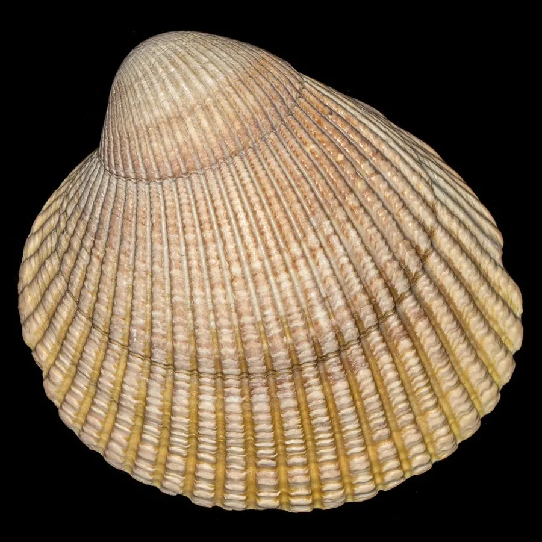

软体动物 · 动物界
加州扁鸟蛤 Clinocardium nuttallii

贝壳圆鼓、壳面有细密放射肋的冷水性鸟蛤，水管短，足部弯曲，北美西海岸常被赶海的人捡拾食用。
- 分类
- 门软体动物门纲双壳纲目帘蛤目科鸟蛤科属扁鸟蛤属
- 栖息环境
- 潮间带中下区至水深数十米的沙泥和泥沙底质海湾
- 地理分布
- 北太平洋东岸，从阿拉斯加至加利福尼亚南部
- 保护级别
- 尚无专门评估；资源受采捕和海湾水质影响
物种志
加州扁鸟蛤的贝壳呈圆形或心形，壳长约六至十厘米，壳质较厚，两壳膨凸，壳面有三十多条细密的放射肋，肋上生有细小的结节，壳色灰白至黄褐，常带褐色的斑块，壳缘呈锯齿状。壳顶突出并向前弯曲。足部大而侧扁，略呈弯曲的斧状，能在沙中掘穴。水管短，末端有触手，滤食时伸出沙面。壳形圆鼓，从侧面看像一颗饱满的心。
它分布于北太平洋东岸，从阿拉斯加到加利福尼亚南部，栖息在潮间带中下区至水深数十米的沙泥和泥沙底质海湾，喜欢水温较低、水流平缓的环境。它靠水管滤食浮游植物和有机颗粒，生长速度中等，寿命约十余年。它是北美西海岸常见的潮间带贝类，赶海时容易捡到，肉质较韧，多用来煮汤、做杂烩或作钓饵。目前尚无专门的保护评估，资源主要受采捕和海湾水质影响。
形态与习性
- 食性靠水管滤食浮游植物和有机颗粒
- 壳长约六至十厘米，壳形圆鼓近心形
- 壳面有三十多条细密放射肋，壳缘呈锯齿状
- 足部大而侧扁，弯曲如斧，善掘沙
- 栖息深度潮间带中下区至水深数十米
- 利用肉质较韧，可煮汤或作钓饵
趣味知识
- 它的壳从侧面看像一颗饱满的心，壳缘的锯齿是两壳闭合时互相咬合的结构。
- 北美西海岸退潮时，赶海的人常在沙面上看到它露出的一小截水管。
- 鸟蛤类的足部弯曲如斧头，能快速钻进沙里，遇到危险会喷水缩回。